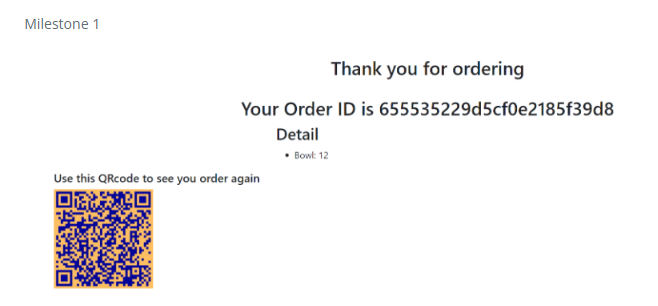
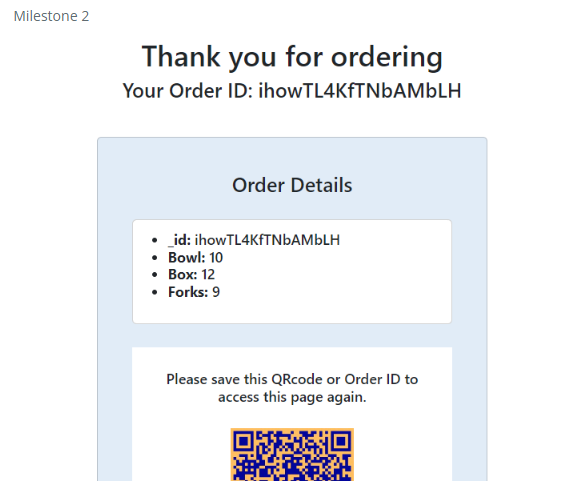

ICS 314 Full Cycle Takeout

HACC Full Cycle Takeout
For the 2023 Hawaii Annual Code Challenge, me and four others (Brain Shu, Elijah Saloma, Joy Tan and Samuel Yang), took on the challenge proposed by Zero Waste Oahu (Click here to see the full list of challenges). The objective was to create an application to supplement their Full Cycle Takeout, a reusable container and utensils rental program. The end goal was for the application to speed up the process of keeping track of rentals and to hold those who rented items financially responsible. The underlying program can also be adapted to fit more use cases. Although there is no method within the application to modify the rentable items from the position of a user. It simply will take some time to modify which items are able to be rented from the back-end.
ICS 314 Full Cycle Takeout
The HACC project was developed using Express.js, Firebase, and Mongoose, alongside MongoDB, qrCode, and React. The issue with this was that for ICS 314, it would be constructed using MeteorJS, MongoDB, and React. So the application developed for the HACC had to be adapted to fit the final project class requirements. Thankfully most of us were in the same ICS 314 class, so we were able to support the development of the ICS 314 version (Elijah not being in ICS 314).
What was learned
For this project I got my first look into software development as a team. Being able to apply and practice skills learned in class: Meteor, Mongo, React, project management, TestCafe and Digital Ocean hosting.
Throughout the project we applied Issue Driven Project Management (IDPM) in a semi-realistic setting. I previously shared my thoughts on it in my essay titled “Software Engineering and ICS 314”. As a summary IDPM is an example of agile project management, with its unique aspect of dividing up the project into smaller tasks called “issues.” Breaking down and delegating tasks for IDPM were difficult as it was hard to assess the difficulty of certain tasks, as many parts would build off another. Developing off a previous issue would also require a clear understanding of the inner-workings of those previous issues.
Although comparatively my abilities for Meteor are not impressive, I was able to learn and support my team members for both front and back-end, alongside handling the documentation of our project. You can see them on our project page here or down in the Links section: https://314firesheep.github.io
Examples
Images come from our project page which is linked above. Images are cut-off as I was unable to take a screenshot of the entire page.
The initial implementation of the result page, after placing an order you will be redirected here.

After formatting the page becomes…

After styling page ends up as…

A similar process was done for most of the pages, after creating our own understanding of what should be included. We would then proceed to make it appear much more beautiful than the initial creation.
Links
Link to GitHub repository
https://github.com/314FireSheep/FullCycleTakeout
Link to Project Page
https://314firesheep.github.io
Link to application